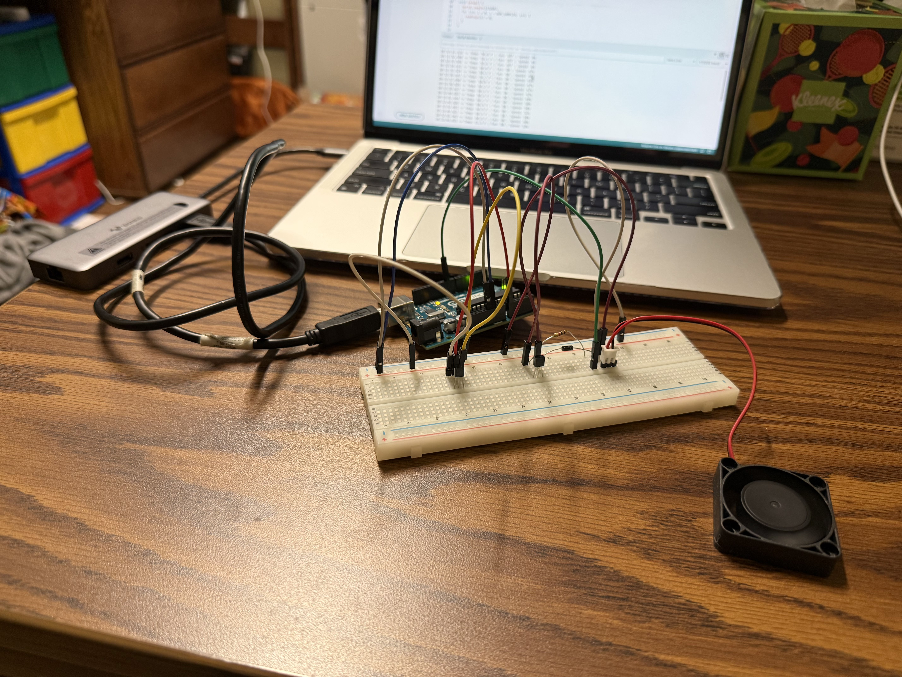
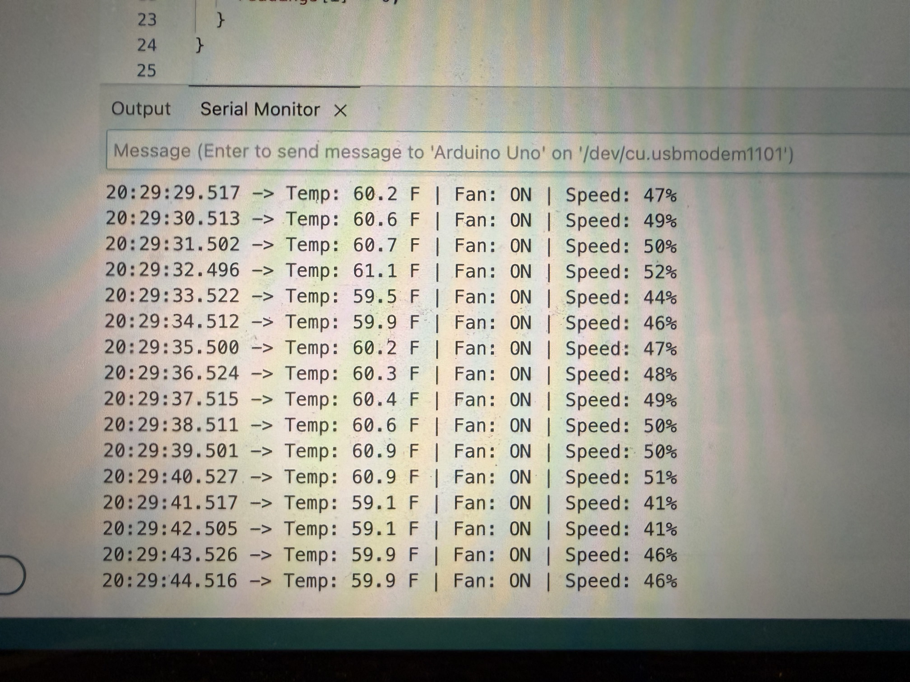

Embedded Temperature-Controlled Ventilation System
Individual Discovery Project — March 2026
This project is an Arduino-based cooling system that automatically adjusts fan speed in response to real-time temperature changes. A TMP37F analog temperature sensor continuously reads the ambient temperature, and a 2N2222 NPN transistor switches a 5V DC fan using PWM signals from the Arduino Uno. The system features a smoothing algorithm that averages the last ten sensor readings to filter out noise, along with built-in hysteresis logic that prevents the fan from flickering on and off near the activation threshold. As the temperature rises, the fan ramps proportionally from a minimum speed up to full power, creating a responsive and stable closed-loop control system.
This project deepened my understanding of analog-to-digital conversion, transistor-based switching circuits, and PWM motor control. It also taught me the importance of signal conditioning and threshold design in building reliable embedded systems.

